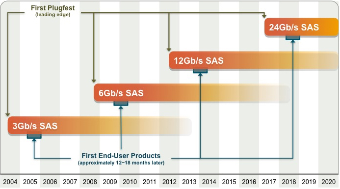

ATA, SATA, SCSI and SAS
Abbreviations
| Abbreviation | Acronym for |
|---|---|
| ATA, IDE | Advanced Technology Attachment, Integrated Drive Electronics |
| SATA | Serial ATA |
| SCSI | Small Computer System Interface |
| SAS | Serial Attached SCSI |
Standard Committes
- incits: InterNational Committee for Information Technology Standards
- t10: Technical Committee T10, SCSI Storage Interfaces
- t13: Technical Committee T13, ATA Interfaces
- committees
Industry Alliances
Roadmaps
- SAS Roadmap

Compare
- SAS, SATA, SCSI and ATA
- SAS vs SATA: reliability, error bit rate, MTBF, error recovery/detection, silent data corruption, RV compensation feedback mechanism
- Serial vs Parallel: signal skewing, crosstalk